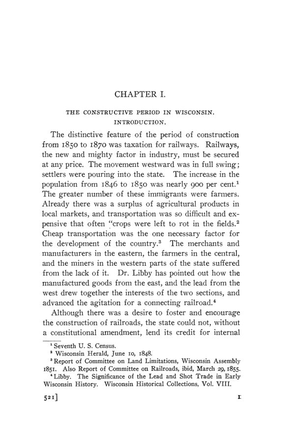

Snider, 1906: Wisconsin e o imposto sobre a receita das ferrovias
Leitura: 11 min
Em 1906, Guy Edward Snider reconstituiu meio século de tributação das ferrovias de Wisconsin pela receita bruta e a comparou com o imposto sobre o valor, que o estado acabara de adotar.


Em 1862, o governador Harvey contou ao Legislativo de Wisconsin que o estado tinha 863¼ milhas de ferrovias, que valiam pelo menos US$ 15 mil por milha. No ano anterior, essa propriedade pagara ao Tesouro estadual US$ 25.056,29, em lugar de todos os impostos. Para Harvey, a regra era grosseiramente desigual, embora a teoria da lei lhe parecesse correta: cobrar um percentual da receita era mais justo do que expor os trilhos à tributação aos pedaços, em cada município cortado pela linha. Naquele mesmo ano, a alíquota subiu de 1% para 3% da receita bruta.
O episódio está em The Taxation of the Gross Receipts of Railways in Wisconsin, de Guy Edward Snider, publicado em 1906 como o nº 4 do vol. 7 da terceira série das Publications of the American Economic Association. O autor se propõe um estudo histórico e crítico do imposto sobre a receita bruta tal como se desenvolveu em Wisconsin, com comparações com outros estados. Segundo ele, depois dos imóveis, as ferrovias eram a fonte de receita mais produtiva dos governos estaduais e locais. O imposto aparecera na carta da Illinois Central, em vigor desde 1851, e chegou a Minnesota em 1873 e a Michigan em 1874.
Como nasceu o imposto de 1%?
O período de 1850 a 1870 é descrito como o da tributação a favor das ferrovias. O estado não podia emprestar seu crédito sem emenda constitucional, e cidades e condados emitiram títulos para comprar ações das companhias, na esperança de pagá-los com dividendos que não vieram. Enquanto isso, o imposto geral sobre a propriedade tratava os trilhos como terra rural: em Wauwatosa, uma faixa de sete milhas foi avaliada em nove seções, a valores diferentes por acre. Em dois municípios, a faixa de domínio chegou a ser vendida por impostos atrasados.
As companhias pediram mudança, e os condados ainda sem trilhos, a grande maioria, aceitaram qualquer concessão que apressasse a construção. A lei de 1854 fixou o pagamento de 1% da receita bruta ao Tesouro estadual, em substituição a todos os impostos. Segundo Snider, o resultado foi reduzir o total pago pelas ferrovias a menos da metade. O condado de Waukesha reagiu: o advogado E. G. Ryan julgou a lei inconstitucional e os assessores locais continuaram a lançar o imposto. A Suprema Corte estadual, porém, entendeu que a Constituição exigia uniformidade dentro de cada classe de propriedade.
Imposto ou taxa de licença?
Em 1859 e 1860, a mesma corte mudou de posição: a uniformidade valia para toda a propriedade, e o 1% sobre a receita era um imposto, não um preço por um privilégio. A lei de 1854 caiu. O Legislativo isentou as ferrovias e passou a cobrar os mesmos 1% como taxa de licença para operar. Num caso seguinte, a corte anulou impostos de Milwaukee de 1857 a 1859, porque a propriedade ferroviária fora omitida do lançamento; a consequência era tornar ilegais os impostos de 1854 a 1862 em todos os municípios cortados pelas linhas. O juiz Paine disse que a nova lei era a antiga com outro nome:
“apenas chamando as coisas por nomes errados, sustentar a mais palpável evasão” (“by merely calling things by wrong names, sustain the most palpable evasion”)
Diante da perspectiva de anular títulos de propriedade em todo o estado, a corte reabriu o caso e, em junho de 1862, voltou atrás com base no precedente, recomendando ao Legislativo que mudasse a lei. A taxa de licença sobreviveu até 1903.
Quanto as ferrovias deveriam pagar?
Em 1874, o secretário de Estado testou três métodos de avaliação: custo das linhas, dívida mais valor das ações e lucro líquido capitalizado. Os dois últimos resultavam em impostos de 13% e 14,2% da receita bruta, contra os 3% então cobrados. Snider critica as estatísticas e os métodos do secretário, mas registra que os números tiveram enorme influência. A alíquota subiu para 4%. Na mesma época, a lei Potter fixou tarifas máximas; segundo o autor, só quatro ferrovias continuaram a pagar juros dos títulos, a construção parou e veio a reação.
A resposta de 1876 foi dividir as ferrovias em classes. Quem tinha receita de US$ 3 mil ou mais por milha pagava 4%; as linhas entre US$ 1.500 e US$ 3 mil pagavam US$ 5 por milha mais 2% sobre o excedente de US$ 1.500; as abaixo disso, apenas US$ 5 por milha. Assim, o estado arrecadava das linhas prósperas e poupava as que cortavam regiões pouco desenvolvidas.
Como se escapa de um imposto em degraus?
Os degraus criaram incentivos. Uma comissão legislativa relatou que a Wisconsin Central construíra, em 1881, ramais e desvios para aumentar a quilometragem e manter a receita por milha abaixo de US$ 3 mil. Com isso, pagara de taxa US$ 17.681,63, em vez dos US$ 62.444,23 devidos. O comissário ferroviário pediu que a lei definisse o que contava como linha. Em Michigan, uma revisão de ramais e desvios eliminou 367,58 milhas da quilometragem declarada.
A classificação de 1897, em seis classes, reduziu mas não eliminou as distorções. Em 1899, uma ferrovia da primeira classe com lucro líquido de 23,27% da receita pagava 4% sobre a receita bruta, enquanto uma da quinta classe, com 49,45%, pagava US$ 5 por milha, cerca de dois terços de 1%. Snider testa duas justificativas para a progressividade: a de que o custo operacional cai, em proporção, quando o tráfego aumenta, e a de que a capacidade de pagar cresce mais rápido que o lucro. Conclui que a primeira não basta sozinha e que, aceita qualquer das duas, a classificação tende à equidade, mas deveria ter mais degraus.
Quem confere a receita declarada?
Até 1889, o tesoureiro estadual calculava o imposto sem conhecer contabilidade ferroviária; depois, o comissário ferroviário assumiu a tarefa, mas nunca foi além dos relatórios certificados pelas companhias. A separação da receita interestadual era feita pelas próprias empresas, cada uma a seu modo. O governador La Follette resumiu a objeção ao sistema:
“permite que a corporação faça seu próprio relatório... em outras palavras, que avalie a si mesma” (“allows the corporation to make its own report... in other words to assess itself”)
A conclusão do capítulo é sobre administração, não sobre teoria. A regra da vida oficial, diz Snider, é a inércia; por isso a lei precisa ser explícita e funcionar quase sozinha. A virtude do imposto sobre a receita bruta estaria no lançamento: pouca discricionariedade, valor definido por regra. Os abusos dos sistemas que dão grande poder de avaliação aos funcionários seriam muito maiores que a perda de alguns dólares por declarações falsas.
O imposto sobre o valor funcionava melhor?
Para comparar, o autor estudou o sistema ad valorem do Missouri, em vigor havia mais de trinta anos: uma junta formada pelo governador, pelo secretário de Estado, pelo auditor, pelo tesoureiro e pelo procurador-geral avaliava as ferrovias. Snider assistiu às reuniões, entrevistou membros e leu as transcrições. O diário oficial da junta não registrava como os valores eram obtidos. Na prática, cada nova administração elevava a avaliação total em cerca de US$ 10 milhões e depois pouco mudava. No vizinho Iowa, um advogado de ferrovia mudava de critério a cada ano, sempre com sucesso.
Por que Wisconsin abandonou o sistema em 1903?
Como fonte de receita, o imposto funcionava. De 1889 a 1901, forneceu 38% da receita total do estado. De 1882 a 1902, a receita bruta das ferrovias de Wisconsin cresceu 240%, a renda operacional 199% e o imposto pago 291%. Para Snider, o sistema se ajustava sozinho ao aumento da capacidade de pagar; o que faltava era alíquota.
Em Michigan, a avaliação conduzida por Mortimer E. Cooley e Henry Carter Adams chegou a US$ 202.716.262; à alíquota média do imposto geral, o valor renderia quase o dobro do imposto sobre a receita. Os dois estados abandonaram o sistema em nome da igualdade. Snider aceita que as ferrovias podiam pagar mais, mas considera falaciosos os fundamentos da mudança: as próprias investigações mostraram, diz, a impossibilidade de avaliar toda a propriedade de um estado a valor de mercado. Ele propõe tratar a escolha de classes de propriedade como decisão de política fiscal, segundo a utilidade social, e ajustar a alíquota pelas condições do setor.
Na minha leitura
Na minha leitura, a força do estudo está na combinação de fontes: rolos de lançamento guardados nos cofres dos condados, cartas do Tesouro, relatórios de comissões, entrevistas e a observação direta de uma junta de avaliação. O próprio autor adverte que o lucro líquido das ferrovias, sua principal régua para medir capacidade de pagar, depende de práticas contábeis desiguais. Os testes estatísticos, por isso, ilustram mais do que provam. A parte mais sólida é a institucional.
O dilema que o livro expõe é permanente. Uma base tributária simples e pouco manipulável, como o faturamento, ignora diferenças de custo e de margem; uma base teoricamente melhor, como o valor ou o lucro, exige avaliação e abre espaço para discricionariedade, pressão e captura. Os degraus de alíquota mostram outro problema clássico: toda descontinuidade cria incentivo para ficar logo abaixo do limite. E a autodeclaração sem auditoria cobra seu preço, como mostraram os US$ 10,5 milhões descobertos em 1903.
Glossário
- Receita bruta (gross earnings)
- total recebido pela ferrovia, antes de deduzir custos operacionais.
- Imposto ad valorem
- imposto calculado sobre o valor avaliado da propriedade.
- Taxa de licença (license fee)
- pagamento exigido para operar no estado; em Wisconsin, o nome jurídico do imposto sobre a receita a partir de 1860.
- Imposto específico
- valor fixo por unidade, como US$ 5 por milha de linha.
- Faixa de domínio (right of way)
- terreno por onde passa a linha férrea.
- Stare decisis
- princípio de manter decisões anteriores dos tribunais para preservar a segurança jurídica.
- Renda operacional
- receita bruta das operações menos os custos operacionais.
- Localização da receita
- repartição, entre os estados, da receita de uma ferrovia que opera em vários deles.
- Movimento Grange
- movimento de agricultores que, nos anos 1870, pressionou por regulação das tarifas e maior tributação das ferrovias.
Fontes
- [The Taxation of the Gross Receipts of Railways in Wisconsin]: Introduction (pp. vii–viii). JSTOR · Internet Archive (PDF)
- The Taxation of the Gross Receipts of Railways in Wisconsin (pp. 1–138). JSTOR · Internet Archive (PDF)
- Sumário da edição no JSTOR: Publications of the American Economic Association, 3ª série, vol. 7, nº 4.
Documento em domínio público (EUA, publicado antes de 1931), via JSTOR Early Journal Content e Internet Archive. Resumo e comentário do autor deste site, sem afiliação com a American Economic Association. Encontrou um erro? Escreva: a correção é publicada no próprio texto, com data.
← Nº 80 · O manual de 1906: retrato de uma profissão com 1.032 nomes Nº 82 · Providence, 1906: a honra nos negócios e o salário arbitrado →